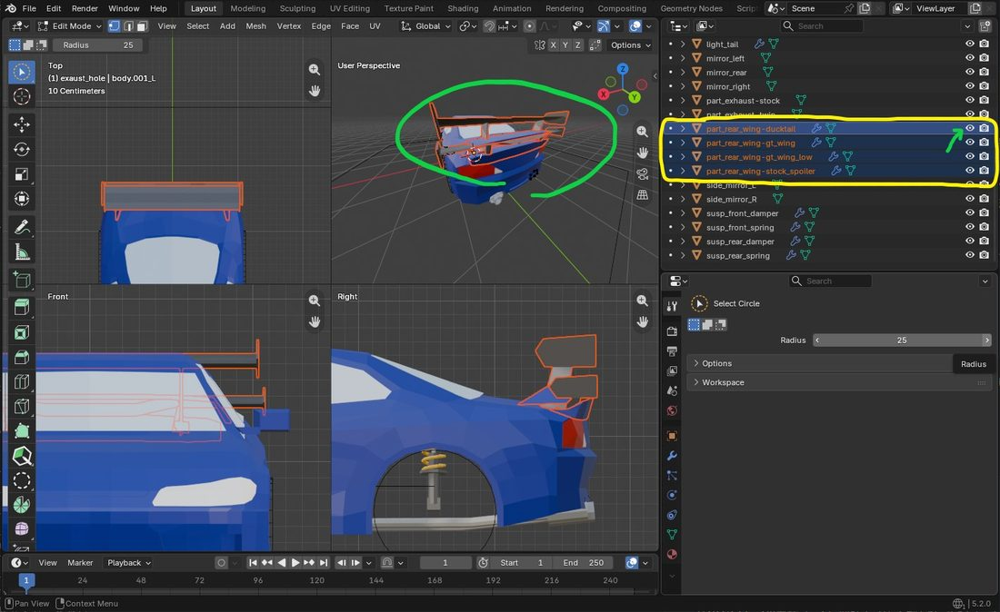

Turbos and blow-off valves, body parts such as aero and fenders, and exhausts.ターボとブローオフバルブ、エアロやフェンダーなどの外装パーツ、マフラー。
ターボは加速が変わる部品、ブローオフバルブはアクセルを抜いたときに「プシュッ」と鳴るだけの部品です。どちらもモデルは要りません。
A turbo changes how the car accelerates; a blow-off valve only adds the "pssh" when you lift off. Neither needs a model.
data/mypack/car_parts/my_turbo.json:
{
"slot": "turbo",
"turbo": { "boost": 0.5 }
}"part.mypack.my_turbo": "マイタービン"これで、ゲームの G →「パーツ」→「ターボ」のタブに並びます。boost は全開のときにトルクを何割増やすか（0.5 で 1.5 倍）です。
data/mypack/car_parts/my_turbo.json:
{
"slot": "turbo",
"turbo": { "boost": 0.5 }
}"part.mypack.my_turbo": "My Turbo"It now appears under G → "Parts" → the "Turbo" tab. boost is how much extra torque at full boost (0.5 means 1.5×).
data/mypack/car_parts/my_bov.json:
{ "slot": "blowoff" }"part.mypack.my_bov": "マイブローオフ"ターボを付けている車にだけ、「ブローオフ」のタブが出ます。
data/mypack/car_parts/my_bov.json:
{ "slot": "blowoff" }"part.mypack.my_bov": "My Blow-off"The "Blow-off" tab only appears on a car with a turbo fitted.
{
"slot": "turbo",
"turbo": {
"boost": 0.50,
"spool_from": 0.30,
"spool_full": 0.65,
"spool_rate": 2.0
}
}boost … 全開のときにトルクを何割増やすか（0〜1.5）spool_from / spool_full … 効き始める回転と、いっぱいに効く回転。アイドルを 0、レブリミットを 1 とした割合で書く。大きいタービンほど高い回転へ寄せるspool_rate … 効きが上がる速さ（0.1〜20）。小さいほどターボラグが長い同梱の 2 つ（比べる目安）:
boost | spool_from | spool_full | spool_rate | 既定の車の 0-160km/h | |
|---|---|---|---|---|---|
| なし | — | — | — | — | 11.3 秒 |
| 純正タービン | 0.35 | 0.22 | 0.55 | 3.0 | 8.9 秒 |
| ビッグタービン | 0.70 | 0.40 | 0.78 | 1.4 | 8.0 秒 |
{
"slot": "turbo",
"turbo": {
"boost": 0.50,
"spool_from": 0.30,
"spool_full": 0.65,
"spool_rate": 2.0
}
}boost — extra torque at full boost (0 to 1.5)spool_from / spool_full — where boost starts and where it is full, as a fraction from idle (0) to the rev limit (1). Bigger turbos sit higherspool_rate — how fast boost builds (0.1 to 20). Smaller means more lagThe two bundled turbos, for reference:
boost | spool_from | spool_full | spool_rate | Default car 0-160 km/h | |
|---|---|---|---|---|---|
| None | — | — | — | — | 11.3 s |
| Stock turbo | 0.35 | 0.22 | 0.55 | 3.0 | 8.9 s |
| Big turbo | 0.70 | 0.40 | 0.78 | 1.4 | 8.0 s |
cars に車種の id を並べます（ディーゼル車専用のタービン、など）。書かなければ、どの車種にも付けられます。
{
"slot": "turbo",
"cars": ["mypack:prado"],
"turbo": { "boost": 0.4 }
}List car ids in cars (a turbo only for a diesel, say). Leave it out and every car can fit it.
{
"slot": "turbo",
"cars": ["mypack:prado"],
"turbo": { "boost": 0.4 }
}音は部品ではなく車の側で変えます。車の vehicles/<車>.json の sounds に "blowoff" を書きます（車の 7 章）。
The sound belongs to the car, not the part: set "blowoff" in sounds in the car's vehicles/<car>.json (chapter 7 of the Car guide).
"turbo": { ... } を書く（書かないと純正タービンくらいの値になる）"turbo": { ... } (without it you get roughly stock-turbo values)ウイング・バンパー・フェンダーなど、車体に固定される部品です。
Wings, bumpers, fenders — parts fixed to the body.
part_<場所>-<部品名>（例 part_rear_wing-gt_wing）。場所は下の表から選ぶdata/mypack/car_parts/gt_wing.json（ファイル名が部品名）:
{ "slot": "rear_wing" }"part.mypack.gt_wing": "GT ウイング"これで、ゲームの G →「パーツ」に、その場所のタブと部品が並びます。
part_<slot>-<part> (e.g. part_rear_wing-gt_wing); pick the slot from the table belowdata/mypack/car_parts/gt_wing.json (the file name is the part name):
{ "slot": "rear_wing" }"part.mypack.gt_wing": "GT Wing"The slot's tab and the part now appear under G → "Parts" in game.

part_rear_wing-…）が車体と同じモデルの中に重なって入っています。アウトライナーで全部を表示（目のアイコンが開いた状態）にしたまま書き出します。ゲームでは付けている 1 つだけが描かれますpart_rear_wing-…) overlap inside the same model as the body. Export with all of them visible in the outliner (eye icon open); in game only the fitted one is drawn.slot）slot)slot | 入るもの |
|---|---|
front_bumper | フロントバンパー、リップ、スプリッター、カナード |
side_skirt | サイドスカート |
fender | オーバーフェンダー |
rear_wing | スポイラー、ウイング、ダックテール |
rear_diffuser | リアバンパー、ディフューザー |
exhaust | マフラー（3 章） |
slot | What goes there |
|---|---|
front_bumper | Front bumper, lip, splitter, canards |
side_skirt | Side skirts |
fender | Over-fenders |
rear_wing | Spoiler, wing, duck tail |
rear_diffuser | Rear bumper, diffuser |
exhaust | Exhaust (chapter 3) |
その車にオブジェクトのある部品も初期装備も無い場所は、タブが出ません。
A slot's tab only appears if the car has an object for one of its parts, or a default part.
aero）効きを調整しない部品（ダックテールなど）は、数字 1 つで書きます。data/mypack/car_parts/ducktail.json:
{
"slot": "rear_wing",
"aero": { "rear": 0.25 }
}換装画面の「角度」で効きを調整できる部品（GT ウイングなど）は、[最小, 最大] で書きます。前にも効かせたいときは front も書きます。data/mypack/car_parts/gt_wing.json:
{
"slot": "rear_wing",
"aero": {
"rear": [0.6, 1.6],
"front": 0.1,
"angle": 0.4
}
}front / rear … 前と後ろを、どれだけ押し付けるか。大きいほど強い（0〜3）。1 で 200km/h のとき約 190kgangle … 「角度」のスライダーの最初の位置（0〜1、省略で 0.5）。角度で変わるのは走りだけで、見た目は動かない換装画面の右には、その部品のダウンフォースと、付けたときの配分・グリップ・最高速の目安が出ます。
aero)A part whose effect is fixed (a duck tail, say) takes a single number. data/mypack/car_parts/ducktail.json:
{
"slot": "rear_wing",
"aero": { "rear": 0.25 }
}A part whose effect players can adjust with the parts screen's "Angle" slider (a GT wing, say) takes [min, max]. Add front if it should press the front too. data/mypack/car_parts/gt_wing.json:
{
"slot": "rear_wing",
"aero": {
"rear": [0.6, 1.6],
"front": 0.1,
"angle": 0.4
}
}front / rear — how hard it presses the front and rear down. Bigger is stronger (0 to 3). 1 is about 190 kg at 200 km/hangle — where the "Angle" slider starts (0–1, default 0.5). The angle changes driving only; the object does not moveThe parts screen shows the part's downforce and how balance, grip and estimated top speed change.
名前は part_<部品名>（例 part_gt_wing）でも通ります。どちらの決まりにも合わない名前にしたいときは、車の vehicles/<車>.json に対応を書きます。
"parts": {
"mypack:twin_muffler": { "show": ["part_exhaust-twin", "part_exhaust-twin_tip"] }
}show に書けるのは part_ で始まる名前だけです。
part_<part> (e.g. part_gt_wing) works too. For any other name, map it in the car's vehicles/<car>.json:
"parts": {
"mypack:twin_muffler": { "show": ["part_exhaust-twin", "part_exhaust-twin_tip"] }
}Only names starting with part_ are allowed in show.
車の諸元 data/mypack/cars/<車>.json の、values と同じいちばん外側に書きます。
{
"values": { "mass": 1250 },
"default_parts": {
"rear_wing": "mypack:s15_spoiler",
"exhaust": { "part": "mypack:stock_muffler", "removable": false }
}
}"removable": false なら外せない。外すと穴だけ残る部品に使うPut them in the car's spec, data/mypack/cars/<car>.json, at the top level next to values:
{
"values": { "mass": 1250 },
"default_parts": {
"rear_wing": "mypack:s15_spoiler",
"exhaust": { "part": "mypack:stock_muffler", "removable": false }
}
}"removable": false means it cannot come off. Use it for parts that would leave a holeゲームは、車体の OBJ の中に入っている部品のオブジェクトを、表示・非表示で切り替えているだけです。付けている部品のオブジェクトだけを描き、残りは描きません。そのため:
body に一体で残した部分は、付け替えても消えないlight_tail などのマテリアルを割り当てると、部品と一緒に光る（車の 3 章）cars で付けられる車種を絞れる。表示名は part.<パック>.<部品名>The game only shows or hides part objects that are already inside the car's OBJ. It draws the objects of the fitted parts and skips the rest. So:
body stays, whatever is fittedlight_tail material light up with the part (chapter 3 of the Car guide)cars limits which cars can fit it. The display name is part.<pack>.<part>見た目と排気音を変える部品です。走りは変わりません。
A part that changes the look and the exhaust note. Driving does not change.
part_exhaust-<部品名>（例 part_exhaust-titanium）data/mypack/car_parts/titanium.json:
{ "slot": "exhaust" }"part.mypack.titanium": "チタンマフラー"これで、ゲームの G →「パーツ」→「マフラー」のタブに並びます。このままでは音はその車のままです。
part_exhaust-<part> (e.g. part_exhaust-titanium)data/mypack/car_parts/titanium.json:
{ "slot": "exhaust" }"part.mypack.titanium": "Titanium exhaust"It now appears under G → "Parts" → the "Exhaust" tab. The sound is still the car's own.
見た目の JSON を置きます。assets/mypack/car_parts/titanium.json（素性と同じファイル名）:
{
"exhaust": {
"pitch": [0.85, 1.00],
"volume": 1.2,
"tone": 0.3
}
}pitch … 音の高さの倍率。1 未満で低くなる。[最小, 最大] で書くと、換装画面の「音の低さ」でその範囲を動かせるvolume … 音量の倍率（0〜2）tone … 「音の低さ」の最初の位置（0 でいちばん高い、1 でいちばん低い。省略で 0）Add a looks JSON, assets/mypack/car_parts/titanium.json (same file name as the definition):
{
"exhaust": {
"pitch": [0.85, 1.00],
"volume": 1.2,
"tone": 0.3
}
}pitch — pitch multiplier; below 1 is deeper. Written as [min, max], the parts screen's "Deepness" slider moves within itvolume — volume multiplier (0 to 2)tone — where the "Deepness" slider starts (0 = highest, 1 = lowest; default 0)assets/mypack/sounds/titanium_exhaust.oggassets/mypack/sounds.json にサウンドイベントを書く:
{
"titanium_exhaust": {
"sounds": [{ "name": "mypack:titanium_exhaust" }],
"attenuation_distance": 64
}
}exhaust で指す:
{
"exhaust": { "sound": "mypack:titanium_exhaust" }
}高回転まで音程を伸ばしたいときは、1 オクターブ上の音源も作って "sound_high" で指します。sound_tools/make_octave_up.py で作れます。音源の作り方の詳しいことは車の 7 章と同じです。
assets/mypack/sounds/titanium_exhaust.oggassets/mypack/sounds.json:
{
"titanium_exhaust": {
"sounds": [{ "name": "mypack:titanium_exhaust" }],
"attenuation_distance": 64
}
}exhaust in the looks JSON:
{
"exhaust": { "sound": "mypack:titanium_exhaust" }
}To keep the pitch rising at high revs, also make a one-octave-up copy and point "sound_high" at it; sound_tools/make_octave_up.py makes one. More on making sounds in chapter 7 of the Car guide.
純正のマフラーも別のオブジェクト（例 part_exhaust-stock）にして部品を作り、車の諸元 data/mypack/cars/<車>.json のいちばん外側で初期装備にします。外すと穴だけ残るなら、外せないようにします:
{
"values": { ... },
"default_parts": {
"exhaust": { "part": "mypack:stock", "removable": false }
}
}初期装備の詳しいことは2 章の「最初から付いている部品にしたい」にあります。
Make the stock exhaust a separate object too (e.g. part_exhaust-stock), give it a part, and make it a default part at the top level of the car's spec data/mypack/cars/<car>.json. If removing it would leave just a hole, make it non-removable:
{
"values": { ... },
"default_parts": {
"exhaust": { "part": "mypack:stock", "removable": false }
}
}More on default parts in chapter 2, "Have it fitted from the start".
sound の名前が sounds.json に無い。ログに警告が 1 行出ているpitch を 1 より大きくしても高くならない … Minecraft の音程の上限に当たっている。高い音源を sound で差し替えるsound name is missing from sounds.json. A warning is in the logpitch above 1 does not raise it — Minecraft's pitch ceiling. Replace the source with a higher one via sound見落としやすいところを並べます。症状が出てから探すときは配布の 3 章へ。
What is easy to miss. If something is already wrong, go to chapter 3 of Shipping.
part_<場所>-<部品名> で、部品名が car_parts/ のファイル名と同じbody から分けて別のオブジェクトにしたlight_ のマテリアルを割り当てたpart_<slot>-<part>, and the part name matches the file name in car_parts/body into their own objectslight_ material on those facesdata/<pack>/car_parts/<part>.jsondata/<pack>/car_parts/<part>.json| キー | 型 | 既定値 | 意味 |
|---|---|---|---|
slot | 文字列 | 必須 | 付ける場所。"wheel"・"tire"・"turbo"・"blowoff"・"front_bumper"・"side_skirt"・"fender"・"rear_wing"・"rear_diffuser"・"exhaust" |
order | 整数 | 100 | 換装画面に並ぶ順 |
cars | 車種 id の配列 | （すべての車種） | 付けられる車種。読める値が 1 つも無ければ、その部品は捨てられる |
turbo.boost | 数字 | 0.35 | ターボだけ。ブーストいっぱいでトルクを何割増やすか（0〜1.5） |
turbo.spool_from | 数字 | 0.25 | ターボだけ。過給が立ち上がり始める回転の割合（アイドル 0〜レブ 1） |
turbo.spool_full | 数字 | 0.60 | ターボだけ。過給がいっぱいになる回転の割合 |
turbo.spool_rate | 数字 | 3.0 | ターボだけ。ブーストが上がる速さ [1/秒]（0.1〜20） |
tire.stiffness | 数字 | 1 | タイヤだけ。横・縦の剛性の倍率（よれやすさ。0.3〜3.0） |
tire.grip.<路面> | 数字 | 1 | タイヤだけ。その路面でのグリップの倍率。路面は paved・dirt・gravel・sand・snow・ice |
tire.rolling.<路面> | 数字 | 1 | タイヤだけ。その路面での転がり抵抗の倍率 |
aero.front / aero.rear | 数字 or [最小, 最大] | 0 | 外装パーツだけ。その軸のダウンフォースの面積 [m²]（0〜3）。範囲なら角度で調整できる（パーツの 2 章） |
aero.angle | 数字 | 0.5 | 外装パーツだけ。調整していないときの角度（0〜1） |
| Key | Type | Default | Meaning |
|---|---|---|---|
slot | string | required | Where it fits: "wheel", "tire", "turbo", "blowoff", "front_bumper", "side_skirt", "fender", "rear_wing", "rear_diffuser" or "exhaust" |
order | integer | 100 | Position in the parts screen |
cars | array of car ids | (every car) | Which cars can fit it. If none of the values can be read, the part is dropped |
turbo.boost | number | 0.35 | Turbos only. Extra torque at full boost (0 to 1.5) |
turbo.spool_from | number | 0.25 | Turbos only. Where boost starts to build, as a fraction from idle (0) to the rev limit (1) |
turbo.spool_full | number | 0.60 | Turbos only. Where boost is full |
turbo.spool_rate | number | 3.0 | Turbos only. How fast boost builds [1/s] (0.1 to 20) |
tire.stiffness | number | 1 | Tyres only. Scale on lateral and longitudinal stiffness (tread squirm; 0.3 to 3.0) |
tire.grip.<surface> | number | 1 | Tyres only. Grip on that surface. Surfaces: paved, dirt, gravel, sand, snow, ice |
tire.rolling.<surface> | number | 1 | Tyres only. Rolling resistance on that surface |
aero.front / aero.rear | number or [min, max] | 0 | Body parts only. Downforce area on that axle [m²] (0 to 3). A range is adjustable by angle (chapter 2 of the Parts guide) |
aero.angle | number | 0.5 | Body parts only. Default angle (0 to 1) |
assets/<pack>/car_parts/<part>.json（"wheel": { ... } の中。入れ子を省いて、いちばん外側に書いてもよい。ホイールだけ。ターボとブローオフには要らない）assets/<pack>/car_parts/<part>.json (inside "wheel": { ... }, or at the top level without the nesting). Wheels only; turbos and blow-off valves need none| キー | 型 | 既定値 | 意味 |
|---|---|---|---|
model | id | その車種の wheel.model | ホイールの OBJ |
texture | id | その車種の wheel.texture | ホイールのテクスチャ |
designRadius | 数字 | その車種の designWheelRadius | メッシュが何 m の半径で作られているか |
offset | [x,y,z] | その車種の wheel.offset | 平行移動 [m]。X は外向き。X はオフセットのスライダーの既定値（−0.05 〜 0.10。外れたら端へ丸める） |
scale | 数字 1 つ or [x,y,z] | その車種の wheel.scale | X は太さ（スライダーの既定値。0.5 〜 2.5 に丸める）。Y・Z は触らない |
camber | 数字 | その車種の wheel.camber | キャンバー角 [度]。スライダーの既定値（−30 〜 10 に丸める） |
rimRadius | 数字 | （測る） | タイヤの内径（ビード）を置く半径 [m]（メッシュの寸法）。3 章 |
assets/<pack>/car_parts/<part>.json（"tire": { ... } の中。いちばん外側には書けない）| キー | 型 | 既定値 | 意味 |
|---|---|---|---|
model | id | KurumaMod 標準のタイヤ | タイヤの OBJ（タイヤだけ。原点は車軸の中心） |
texture | id | kurumamod:textures/entity/wheel.png | タイヤのテクスチャ |
innerRadius | 数字 | （測る） | メッシュのタイヤの内径 [m]。測った値がおかしいときだけ書く |
outerRadius | 数字 | （測る） | メッシュのタイヤの外径 [m]。同上 |
| Key | Type | Default | Meaning |
|---|---|---|---|
model | id | the car's wheel.model | Wheel OBJ |
texture | id | the car's wheel.texture | Wheel texture |
designRadius | number | the car's designWheelRadius | The radius the mesh was built at, in m |
offset | [x,y,z] | the car's wheel.offset | Translation [m]. X points outward; it is the offset slider's default (−0.05 to 0.10, clamped) |
scale | one number or [x,y,z] | the car's wheel.scale | X is width (the slider's default, clamped to 0.5–2.5). Leave Y/Z alone |
camber | number | the car's wheel.camber | Camber [degrees]. The slider's default (clamped to −30 to 10) |
rimRadius | number | (measured) | Radius where the tyre's bead sits [m], in mesh units. Chapter 3 |
assets/<pack>/car_parts/<part>.json (inside "tire": { ... }; not at the top level)| Key | Type | Default | Meaning |
|---|---|---|---|
model | id | KurumaMod's own tyre | Tyre OBJ (tyre only, origin at the axle centre) |
texture | id | kurumamod:textures/entity/wheel.png | Tyre texture |
innerRadius | number | (measured) | The mesh's inner tyre radius [m]. Only write it if the measured one is wrong |
outerRadius | number | (measured) | The mesh's outer tyre radius [m]. Likewise |
assets/<pack>/car_parts/<part>.json（"exhaust": { ... } の中。いちばん外側には書けない）| キー | 型 | 既定値 | 意味 |
|---|---|---|---|
pitch | 数字 or [最小, 最大] | 1 | 音程の倍率（0.5〜1.5）。範囲なら「音の低さ」で動かせる |
volume | 数字 | 1 | 音量の倍率（0〜2） |
sound | id | （その車の音） | 排気音のサウンドイベント |
sound_high | id | （無し） | 高回転側（1 オクターブ上）のサウンドイベント |
tone | 数字 | 0 | 調整していないときの低さ（0〜1） |
assets/<pack>/car_parts/<part>.json (inside "exhaust": { ... }; not at the top level)| Key | Type | Default | Meaning |
|---|---|---|---|
pitch | number or [min, max] | 1 | Pitch multiplier (0.5 to 1.5). A range is adjustable with "Deepness" |
volume | number | 1 | Volume multiplier (0 to 2) |
sound | id | (the car's) | Exhaust sound event |
sound_high | id | (none) | High-rev (one octave up) sound event |
tone | number | 0 | Default deepness (0 to 1) |
data/<pack>/cars/<car>.json のいちばん外側）と対応（assets/<pack>/vehicles/<car>.json）| キー | 型 | 意味 |
|---|---|---|
default_parts.<場所> | 部品 id or {"part": id, "removable": 真偽} | 何も付けていないときの部品。removable の既定は true |
parts.<部品 id>.show | オブジェクト名の配列 | その部品を付けたときに出すオブジェクト（part_ で始まる名前だけ） |
data/<pack>/cars/<car>.json) and mapping (assets/<pack>/vehicles/<car>.json)| Key | Type | Meaning |
|---|---|---|
default_parts.<slot> | part id or {"part": id, "removable": bool} | The part fitted when nothing is chosen. removable defaults to true |
parts.<part id>.show | array of object names | Objects shown while that part is fitted (names starting with part_ only) |
KurumaMod — 諸元の全項目は車の付録 A。ゲージスクリプトは modeling_tools/blender_gauge.py と modeling_tools/blender_wheel_gauge.py。
KurumaMod — every spec key is in Appendix A of the Car guide. The gauge scripts are modeling_tools/blender_gauge.py and modeling_tools/blender_wheel_gauge.py.